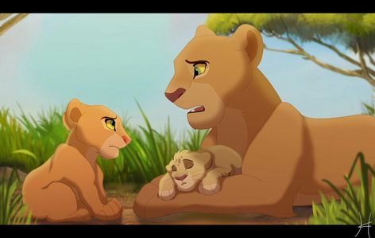

Nala and Simba's story.
They were the fifth King and Queen of the Pridelands.They were the best couple of the Pridelands.Nala of all Queens was the best Queen.She did not fear anything.When they went to fight Scar,she lead the lionesses and was not afraid of fighting six or seven Hyenas all by herself.She was the bravest Queen of all Queens.They had three cubs namely;Kopa,,Kiara and .Kion's name meant leader and she was the second leader of the Lion-guard.Kiara's name meant Bright.Kopa's name meant Heart.After Mufasa's death Scar lead the Pridelands selfishly and their was a terrible drought again.Simba went to Hakuna Matata and met a funny Meerkat named Timon and A warm-hearted Worthog called Pumbaa and they raised Simba very well.One day,when Timon and Pumbaa were singing,Nala Started chasing Pumbaa so that she could take them meat to Sarabi who was Simba's mom,Sarafina who was Nala's mom and the other lionesses toeat and she met Simba.They were so shocked to see each other after a long time and Nala begged Simba to follow her to the Pridelands so that they could fight Scar and Simba would take his place as king and Nala a queen and they could return the Pridelands to the normal situation.They went and fought Scar and they won.Simba came out the fifth King of the Pridelands and Nala the fifth Queen of the Pridelands.
.webp)
.webp)
Nala's family
She is the daughter to Sarafina and Hairi.She was a sister to Mheetu.She was a granddaughter to Angavu and Kilima.A great-granddaughter to Nafsi.She was the Fifth Queen of the Pridelands and she was Simba's wife and a mother to Kopa,Kiara and Kion.She was so similar to Sarafina that it could be so challenging to differenciate the two lionesses.Though Sarafina was Nala's mom you cold have thought that they were twin sisters and all of Nala's family members had blue eye balls except Simba,Kiara,Kopa and Kion.
.webp)
Sarafina's Family
She was Nala's mom.She was the First daughter to Angavu and Kilima.She was followed by Fanco,after Fanco came Surak,followed by Mhusi then last came Azuli.She led her younger siblings with love and care.She tought them how to hunt and even told tem that her children will be named by her siblings.One day,while drinking water,Surak slipped and fell in the water and Sarafina went to hunt for her siblings because their parents had ied so as the eldest,she was left with the responsibility of taking care of her siblings and a crocodile was heading towards Surak.Mhusi roared as loud as he could and Sarafina recognised the roar and ran to the river and found when the crocodile was so close to Surak and she roared in anger and the crocodile ran in fear because his father and mother wer the king and queen of the area and as the eldest princess the animals in the land feared her and her brother was safe and sound.
.jpg)